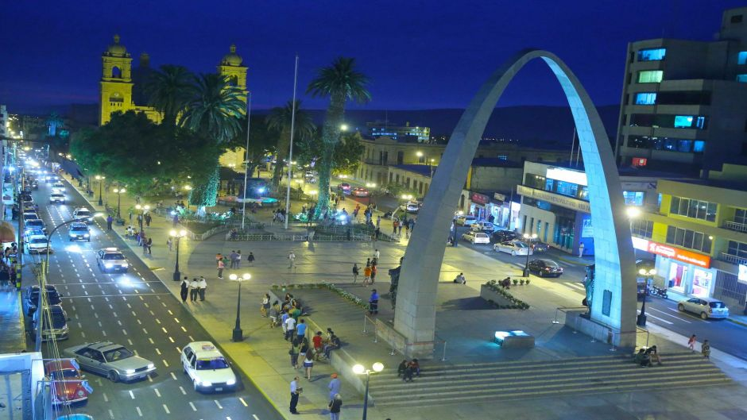
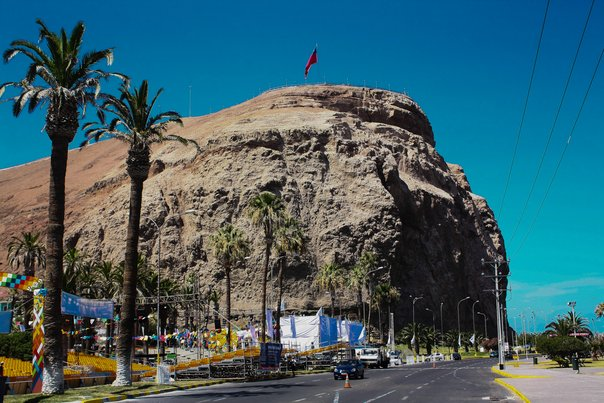
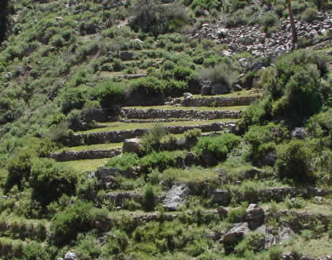
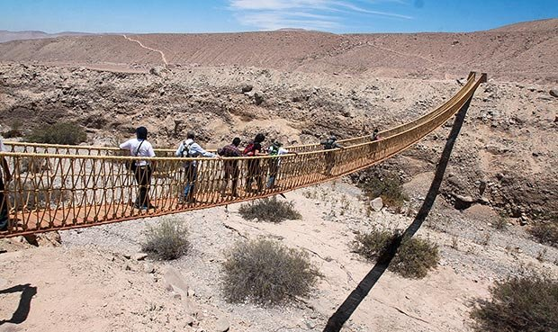

City Tour Tacna

Tacna ofrece una variedad de atractivos históricos culturales que lo introducirán al Perú a través de su riqueza cultural y de su amor e identificación con la patria.
COMENCEMOS NUESTRO RECORRIDO
1- Histórica Casa Zela
2- Teatro Municipal
3- Ex Palacio Municipal
4- Paseo Cívico
5- Arco Parabólico
6- Casa Jurídica
7- Fontana Ornamental
8- Catedral de Tacna
9- Avenida Bolognesi
10- Parque Locomotor
11- Museo Ferroviario
12- Alto de la Alianza
Leer másGuía Tacna - Arica
Usted se encuentra en Tacna y su deseo es viajar al vecino país de Chile, es necesario que tome en cuenta los siguientes datos que le serán de mucha utilidad para realizar un viaje seguro y disfrutar del turismo.
Leer más
Tarata - Ticaco

Tarata es un corredor turístico que cuenta con variados atractivos de interés. Entre ellos destaca el camino inca Tarata - Ticaco, a lo largo del cual se hallan sitios arqueológicos de interés y bellos paisajes constituidos por las quebradas Chakawira y Ticalaco.
1. MIRADOR DE LA APACHETA
2. ESTIQUE PAMPA
3. IGLESIA DE TARUCACHI
4. TATA CURA
5. IGLESIA DE TARATA
6. CAMINO INCA TARATA - TICACO
7. SITIO ARQUEOLÓGICO SANTA MARÍA
8. ANDENERIA DEL PAISAJE CULTURAL
DE TARATA
9. PINTURAS RUPESTRES EN RETEN DE TICALACO
10. IGLESIA DE TICACO
11. BAÑOS TERMALES DE PUTINA (EN TICACO)
12. AGUAS TERMALES DE CHILLICOLLPA
13. CAÍDAS DE AGUA E IGLESIA COLONIAL DE CONCHANCHIRI
14. AGUAS TERMALES DE KALACHAKA
15. AGUAS TERMALES DE YABROCO
16. LAGUNA DE ARICOTA
17. CENTRO POBLADO SANTA CRUZ
18. BOSQUE DE QUEÑUALES
19. VOLCÁN YUCAMANI
20. VALLE GEOTERMAL DE AGUAS CALIENTES
21. AGUAS TERMALES CALIENTES
Miculla mágica

El campo de petroglifos de Miculla, tiene un área aproximada de 20 kms cuadrados. Se ubican en la zona de la quebrada seca de Palca, que llega desde la cordillera para abrirse en dirección a los cálidos parajes ribereños del río Caplina y del imponente cerro Wawapas, que domina Miculla.
Leer másValle viejo Miculla
En el Valle Viejo se puede apreciar la arquitectura tradicional de esta región con sus casas de techo mojinete, algunas de estas construcciones que datan desde año 1862. En el distrito de Pachía se encuentra el Complejo Arqueológico de Miculla, considerado como uno de los complejos arqueológicos de arte rupestre más extensos de Sudamérica, entre los kilómetros 20 y 26 de la carretera Tacna-Palca rumbo a Collpa y La Paz. domina Miculla.
Leer más